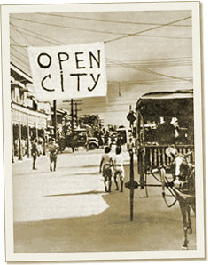
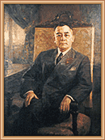

|
j
a v a s c r i p t |
1 9 4 2January 1 — New Year's Day

Manila banners proclaim:
“Open City” and “No Shooting” Our northern and southern forces completed well-coordinated withdrawals and joined together somewhere northwest of Manila before the Japanese could split them — a military feat of sorts. From there it’s on to Bataan, where at least the terrain is in our favor. The Japanese are expected to enter Manila this morning. Made a quick trip to the office for a final check then to Plaza Goiti for breakfast. The place was quiet with more Americans than Filipinos about. Several fires dotted the city here and there, the Pandacan blaze still a pall of ugly black smoke. Small gatherings of British and Americans — the largest group, at the Manila Hotel — anxiously await the arrival of the conquerors. Quite a few are scared, especially the Chinese, mindful of the Nanking atrocities. Across the street, three Chinese families numbering 22 have gathered in one house. All the men are now standing in the garden looking uncharacteristically somber. Except for Joe, we are all Filipino citizens if the Japanese choose to believe us. Dad had satisfactory business dealings with many local Japanese, but we don’t know if they’ll come to our aid if needed. We have provisions for three months, and if necessary, are prepared to stay home for a few days until order is established. Electricity was off early but stuttered back on in the afternoon. The only English news on the airwaves were Japanese stations in Shanghai and Tokyo reporting their troops 12 miles from Manila. KGEI finally burned through at 1800 but could only say the situation in Manila was “critical.”

Jorge B. Vargas
Quezon chose his Secretary, Jorge B. Vargas, to be our front man, naming him Mayor of a consolidated Greater Manila. To him falls the unenvious task of receiving the Japanese. All our forces have left the city except for local enforcement and Col. José P. Guido’s secret operatives. Casa Blanca is empty; MacArthur spent a mere two nights there. To receive the invaders, the City Hall hung two large banners proclaiming “Open City” and “No Shooting,” and promptly disarmed the police. For some, it was “open” slather in the Port Area. A free-for-all ensued when the doors of warehouses were thrown open to the public. For others, the deathwatch continued quietly as zero hour neared. |
|
|
|
|